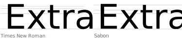

Times New Roman is a serif typeface commissioned for use by the British newspaper The Times in 1931. It was created by type designer Stanley Morison, and he aimed to create a font for the newspaper that focused on efficiency and readability. Morison was inspired by classical typefaces and specifically a modern font titled Plantin.
As a typeface designed for newspaper printing, Times New Roman has a high x-height, short descenders to allow tight line-spacing and a relatively condensed appearance. Additionally, letters have thick portions that hold more ink and increase contrast, and certain strokes were thinned to round out the letters and increase legibility.
Sabon
Sabon is an old-style serif typeface designed by the German-born typographer and designer Jan Tschichold in the period 1964–1967. A coalition of German printers commissioned Tschichold to create a typeface that could be printed identically on Linotype, Monotype, or letterpress equipment, simplifying the process of planning lines and pagination when publishing a book. They were specific about the type of font, rejecting the modern and fashionable trends of the 1960s. It is bold, and most especially, the italic styles are constrained by the Linotype casting machines, where the width of the characters of a particular letter has to be consistent with the width of characters of other styles and hence the narrow f of the italic style.
Comparison
Similarities
The fonts are similar with both having a classic serif font look. Both fonts are often used for titles and writing, for they are legible. The designs were both done during the mid 1900s, and are timeless and recognizable. The photo shows the differences, but also highlights how similar the two serif fonts are.
Differences
The teardrop at the top is much flatter in Sabon, while in Times New Roman it curves over more and ends up much more vertical. Times New Roman’s tail is also more vertical, while Sabon's tail ends with more of a slant. The c in Times New Roman has a tail that extends further upward and much more vertically than Sabon. Sabon’s c ends with a more slanted angle and is flatter on the end.

The pentagram of the word Extra showcases the differences in the width of the E, and the elongation of the E’s serif for Sabon is longer than the Times New Roman Serif. Sabon’s tail is thicker and longer with more of a wavy look, while Times New Roman’s tail is smaller and very thin at the end..The punctuation is mostly similar in shape, however Sabon’s punctuation marks tend to be thicker. Times New Roman’s question mark curves over, while Sabon’s remains vertical. For Sabon, the numbers are wider, with the example of the 9 stretching further to the right than Times New Roman.The pentagrams show the difference in X height, ascenders, descenders, and baseline/capital lines. As shown in the image, Sabon is a wider typeface, and has a larger gap between the captial line and the ascender. The width of the typeface can be seen in the difference of the X’s for each typefaceThe G’s are different for each typeface, specifically seen at the bottom. Times New Roman has a sharper counter at the bottom, versus Sabon, which has a larger counter. Additionally, the top tails of the G’s are different for each, with Sabon’s being curvier, and Times New Roman being straighter.
Examples and visual references
Times New Roman
Poster design for Rings of Light, an event by research-inspired jewelry brand Open Archive in collaboration with Rauric.Originally published in Mercurius magazine (2024), inspired by the works of Mary Ellen Solt, this piece uses Times New Roman as the singular font of choice to create various blooming patterns.By Léa Garait for the 2024–25 season of MJC Izeaux, a community youth club and art center in the southeast of France. In the brochure, Sagace is paired with Times New Roman.Originally published in Heavy Feather Review (2024) for its Side A series, this work uses Times New Roman to explore themes of fascism and state surveillance.The Times newspaper is where the typeface was first used and became known as Times New Roman.Retreival by Mia Marone explore the state and institutional archives related to the Old Melbourne Gaol.
Sabon
A book cover using the Sabon typeface.Notes to Myself by Brendan Dawes, a creative inspiration poster and book using primarily Sabon.Sabon typeface used in signage in the Hamburg airport.Book exploring the Garamond renaissance in the 20th century, culminating in Stempel Sabon, their final major type family for hand setting.Sabon used as identification signage at the Saint Louis Art Museum.Sabon used on lens solution.